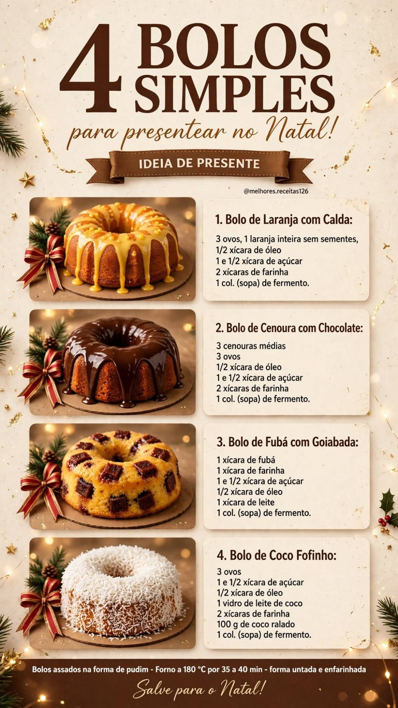

12 fatias · forma de pudim de 22 a 24 cm · toque para marcar o que já separou
Sobre a receita
Branquinho por fora e fofinho por dentro, este bolo de coco parece coberto de neve, perfeito para o Natal. Leva leite de coco na massa e coco ralado dentro e por cima. Fica úmido, perfumado e lindo embalado com um laço de fita.
Modo de preparo
Preaqueça o forno a 180 °C e unte e enfarinhe uma forma de pudim.
Bata os ovos, o açúcar, o óleo e o leite de coco no liquidificador.
Em uma tigela, misture o creme com a farinha e o coco ralado. Por último, misture o fermento.
Despeje na forma e asse por 35 a 40 minutos, até o palito sair limpo.
Desenforme morno e cubra com o coco ralado reservado.
Veja em vídeoA coleção completa

Os 4 bolos simples para presentear no Natal
Dica:Para o coco grudar por cima, pincele o bolo com um pouco de leite condensado ou calda de açúcar antes de cobrir. Para presentear: espere esfriar, coloque o bolo sobre um papel kraft redondo, envolva em papel celofane e amarre um laço de fita.
Fez esta receita?
Conta pra gente como ficou! Deixe um comentário, mande uma foto do seu resultado
ou marque @melhores.receitas126 no seu post.
Conta pra gente como ficou! Deixe um comentário, mande uma foto do seu resultado ou marque @melhores.receitas126 no seu post.